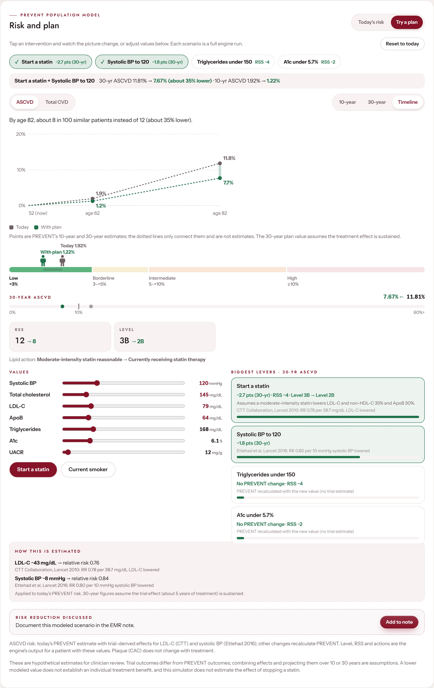
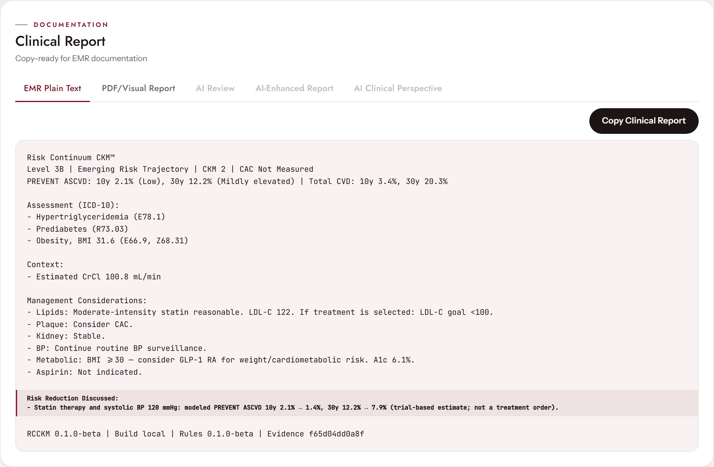
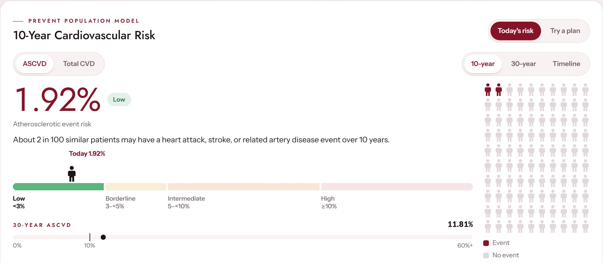
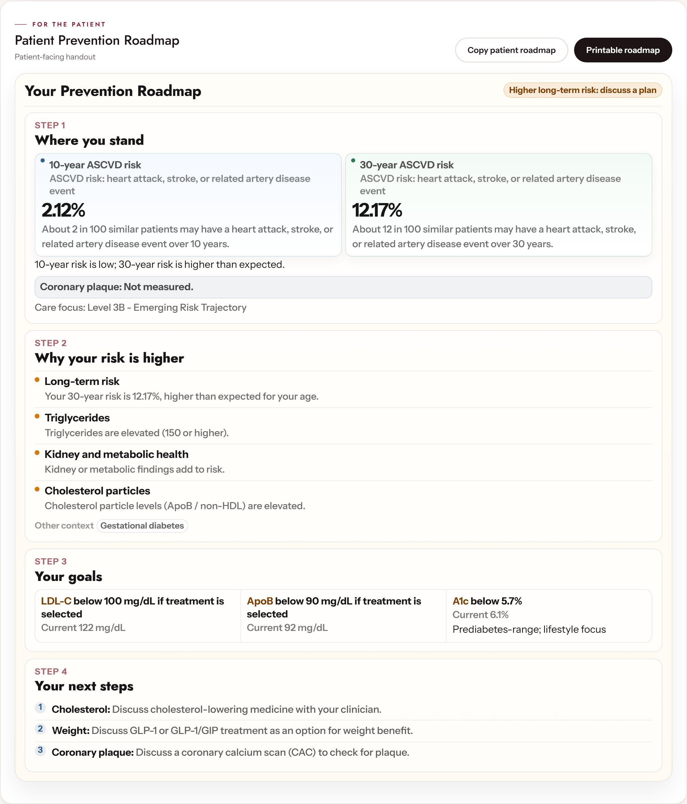
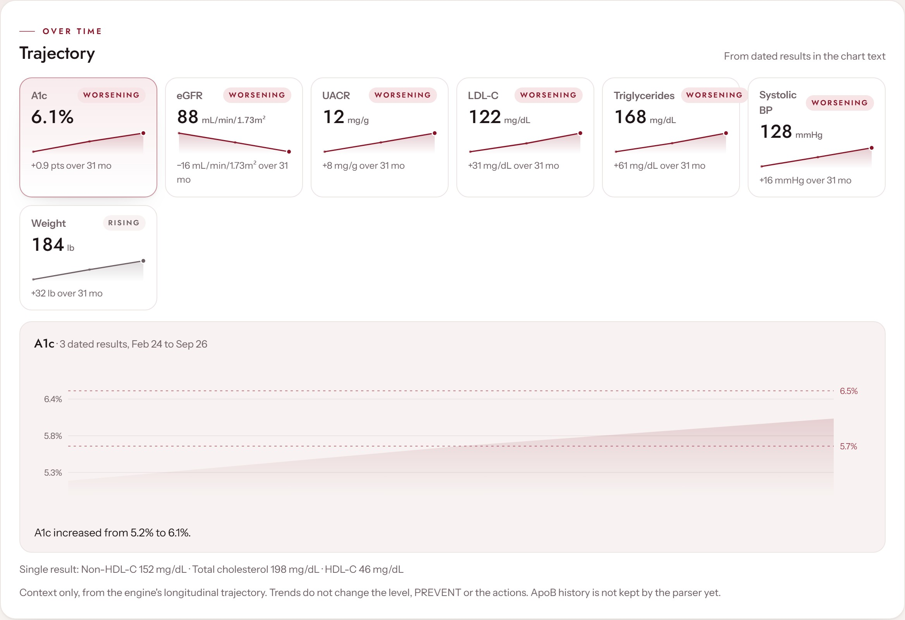
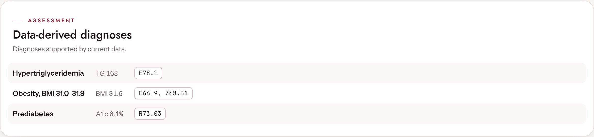
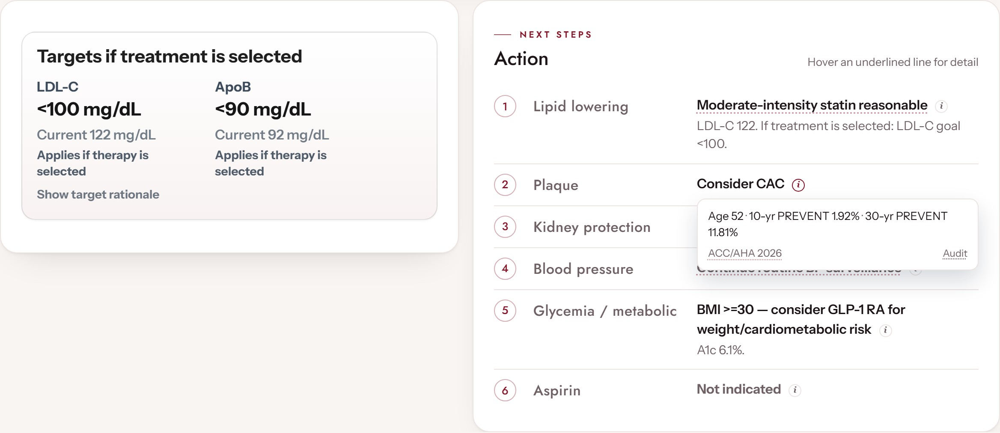
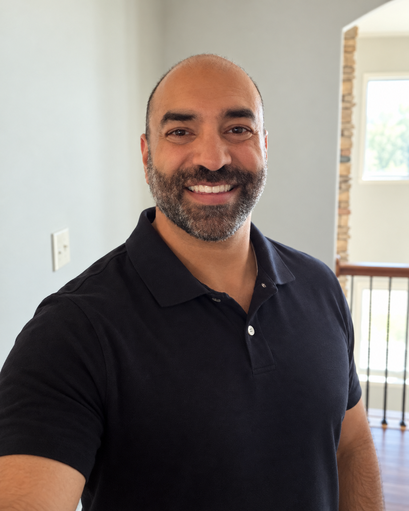

CKM prevention interpretation Cardiovascular · Kidney · Metabolic
Risk Continuum helps them tell it.
See where your patient stands, where their numbers are heading, and what a plan would change.
Emerging risk trajectory · category 3B. Elevated 30-year trajectory plus actionable biologic burden.
of U.S. adults have at least one CKM risk factor. Nearly half meet criteria for stage 2 or higher, often without knowing it.
Aggarwal et al., JAMA, 2024is the median primary care visit. Not much time to pull a full cardiometabolic picture together by hand.
Neprash et al., Medical Care, 2020of adults eligible for lipid-lowering therapy are not receiving it. A clear risk conversation at the point of care can help close that gap.
Patel et al., Johns Hopkins, 2025Paste chart text with dated results and RCCKM lines them up. For this 52-year-old, three years of labs tell a story no single visit showed.
A1c increased from 5.2% to 6.1%.
Synthetic demo patient, dated results from the chart text. Trends add context; they never change the level, PREVENT or the actions on their own.
Start a statin? Bring her blood pressure down? Answer it in the room. Tap an intervention and RCCKM reruns the whole assessment for that scenario.
Tap an intervention and watch the picture change. Each scenario is a full engine run.
Points are PREVENT's 10-year and 30-year estimates; the dotted lines only connect them. The 30-year plan value assumes the treatment effect is sustained. Synthetic demo patient; every value is RCCKM engine output.
In the app, levers are ranked by how much they lower 30-year risk. Drag any value, or stack levers to see what they do together.
Modeled estimates for clinician review. A lower modeled value does not establish an individual treatment benefit.

One click adds the plan you discussed under "Risk Reduction Discussed", with the modeled numbers, worded as an estimate rather than an order.

Patients decide better when they can see their own risk and what each option would change. RCCKM gives you something to point at, a way to try options together, and a record of what you talked about.
"About 2 in 100 similar patients," with a 100-person array at 10 and 30 years.
Today and the plan on one timeline, out to age 82 for this patient.
"Risk Reduction Discussed" goes in the note with the numbers you shared.
Where you stand, why, your goals and your next steps, in plain language.

Where they stand, why their risk is higher, their goals next to their current numbers, and numbered next steps. Copy it into the after-visit summary or print it.

Paste de-identified chart text or enter values in the worksheet, then press Start Assessment. Everything below comes back in seconds from a deterministic engine you can audit.
A clinical summary that names the pattern, with its category on the continuum.
PREVENT at 10 and 30 years, the timeline, and Try a plan.
How A1c, LDL-C, eGFR, BP and weight have moved.
CKM and KDIGO stage, plus diagnoses you confirm.
LDL-C and ApoB targets with numbered next steps.
Every contributor to risk burden, counted.
Plain text for the EMR, or a visual PDF report.
A plain-language handout for the patient.
Ordinal burden score, not an event probability. Displayed RSS equals the sum of the contributors shown.
Each contributing signal drops onto the stack and the score counts up by its points. Every patient is drawn on the same unlabeled canvas, so equal points look equal across patients.
Synthetic demo patients; contributors and points are RCCKM engine output.



Four synthetic demo patients, from a clean prevention visit to high coronary plaque burden on a statin. Each note is the engine's own output.
Paste de-identified chart text or your SmartPhrase, or type values straight into the worksheet. When you paste, a rule-based parser fills the worksheet and shows what it found for you to confirm.
Position, PREVENT, signal score, trajectory, staging, diagnoses and actions in seconds, from a deterministic engine. The optional AI Clinical Pearl is labeled and kept separate.
Tap interventions with your patient and watch the curve move. Add the plan you agree on to the note.
Paste the note into the EMR and print the roadmap before the patient leaves.
Sort out which intervention to prioritize in complex patients.
Follow each patient's trajectory visit after visit.
See the metabolic, kidney, lipid and plaque drivers upstream.
Kidney function, albuminuria and CV risk in one frame.
Diabetes care with heart and kidney risk in view.

Shereef El-Ibiary, MD
Internal Medicine · Primary Care · Hospital Medicine · Population Health
We are at a remarkable moment in medicine. Advances in technology, treatments, and clinical evidence are opening new possibilities for prevention. Our patients’ records hold valuable information about their health and how it is changing. The opportunity now is to bring it all together, efficiently and meaningfully, at the point of care and beyond.
After nearly two decades caring for patients across primary care, hospital medicine, and population health, I built Risk Continuum CKM to help put that opportunity into practice. RCCKM connects a patient’s history, clinical findings, and trends with relevant evidence, helping clinicians see the whole picture and turn that understanding into an individualized approach to prevention.
My goal is to make comprehensive prevention easier to deliver in everyday practice. By bringing the information and evidence together, we can support clinician judgment, strengthen conversations with patients, and extend our attention from today’s decisions to long-term health.
Reconcile. Curate. Care.
"I wanted a way to figure out patients' cardiovascular risk quickly, and catch the signals to alter course well before events, using the routine data we already have or can easily get."
More birthdays. More weddings. More graduations.
Paste de-identified chart text or enter values in the worksheet. Want a quick look first? Try one of the demo cases.
Health systems and practices: we're exploring pilot partnerships. If you'd like to evaluate RCCKM with your team, get in touch.